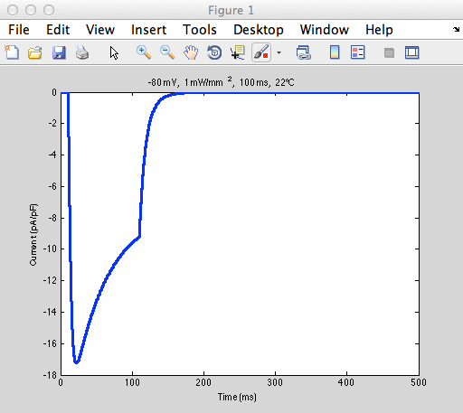

The paper author's matlab model of channel rhodopsin is available at
the authors web site
http://bme.sunysb.edu/labs/eentcheva/publications.htm
Note from the ModelDB administrator: I had to addpath the folders
e.g.:
addpath('ChR2 model simulation files/')
etc.
within the expanded archive even though the matlab code includes
addpath commands. It is likely a difference between the authors
running the code on windows and my use on the mac.
The two main programs in the seperate folders generated these figures:
Figure 2B in the paper, simulated ChR2 in an HEK cell, similar to the
middle trace:

A cardiac cell as in Figure 7: